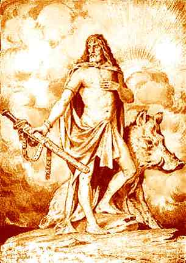
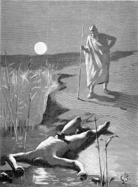
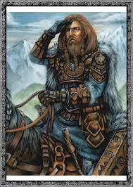
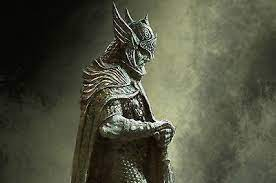

Frey
En la mitología nórdica, Freyr era el hijo de Njörðr y el hermano de Freyja. Era el dios de la lluvia, del sol naciente y de la fertilidad. Es uno de los Vanir, los cuales viven en Vanaheim. Señor de la vegetación, Freyr poseía la summarbrander (la "espada del verano", que sabía moverse y luchar sola por los aires), pero la abandonó por conquistar a Gerda, una gigante virgen. Posee el jabalí de oro Gullinbursti, regalo de los enanos Sindri y Brokk, que tira de un carro tan deprisa como un caballo al galope, y cuyo resplandor ilumina la noche; también el barco Skíðblaðnir, y un caballo que ignora todos los obstáculos. Es el dios favorito de los elfos.
 Más informaciónMímir
Mímir o Mim es un gigante mitológico escandinavo. Era tío materno de Odín y guardián de las fuentes de la sabiduría, ubicadas en las raíces de Yggdrasil. En su momento negó a Odín beber de dichas fuentes. Odín tuvo que negociar y ofrecerle uno de sus ojos. Es uno de los dioses fundamentales en la mitología nórdica cuya cabeza fue amputada y mandada a Odín durante la guerra entre los Æsir y los Vanir. Era reconocido por su conocimiento y sabiduría. Odín viajó a la tierra de los gigantes (Jötunheim) para adquirir la sabiduría y el conocimiento omnisciente de Mímir. El conocimiento fue obtenido al beber del pozo mágico de Mímir, pero como precio por beber de él, Odín fue forzado a sacarse uno de sus ojos. Tras ello volvió a Asgard con la cabeza de Mímir para consultas oraculares de acuerdo a algunas historias. Mímir fue también el consejero de Hœnir después de que se convirtiera en el soberano de los Vanir.
 Más informaciónKvasir
Kvasir es un dios de la mitología nórdica. Fue creado de la saliva de todos los dioses, convirtiéndose así en el más sabio de los Vanir. Dos hermanos, los enanos Fjalar y Galar, lo invitaron a un banquete en su caverna y lo mataron. Los enanos mezclaron su sangre con miel y la preservaron. La mezcla fermentó y se convirtió en el hidromiel que inspiraba a los poetas. Más adelante, mataron a Gilling y a su esposa. El hijo de Gilling, Suttung, enfurecido por el asesinato de sus padres llevó a los enanos hacia el mar y los colocó en un arrecife que sería cubierto por la marea alta. Los enanos le ofrecieron el hidromiel a cambio de sus vidas. Suttung lo tomó, lo llevó a su hogar, lo ocultó en el centro de una montaña y ordenó a su hija Gunnlod que lo cuidara. Odín decidió conseguir dicho hidromiel y trabajó para Baugi, el hermano de Suttung, por un verano entero y luego pidió un pequeño sorbo de él. Baugi se escondió taladrando en una montaña, y Odín se convirtió en una serpiente y se arrastró. Dentro, Gunnlod, la hija de Suttung, estaba custodiando pero la persuadió para que le diera tres sorbos; Odín bebió todo el hidromiel, se convirtió en un águila y escapó.
 Más informaciónLytir
Lytir o Lýtir se considera un dios en la mitología nórdica. Siendo más conocido como una deidad antigua probablemente prehistórica y por ello considerado un dios vanir, los primeros dioses nórdicos. Su nombre se relaciona con el nórdico antiguo hlutr, significando la «porción, parte, lo prevé». Lytir aparece en el relato Hauks þáttr hábrókar del Flateyjarbók donde un rey sueco consulta al dios. Se sabe que su culto era propio de las völvas. Lytir no se menciona en ningún otro lugar, pero su nombre aparece en varios vocablos suecos que pudieron contener elementos de su nombre, tales como Lytisberg y Lytislunda.
 Más información